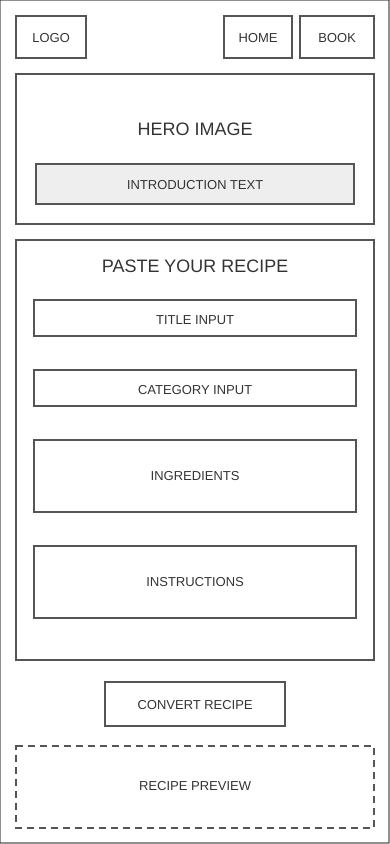
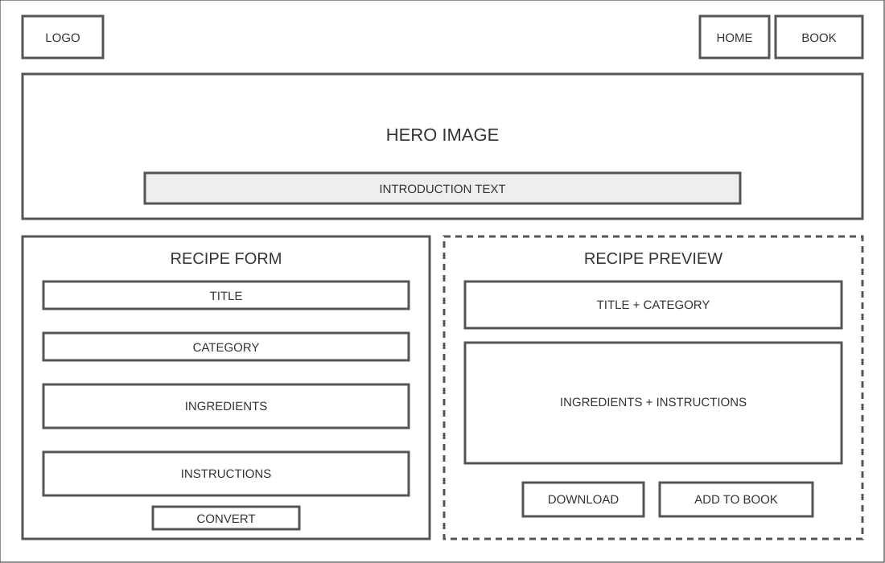
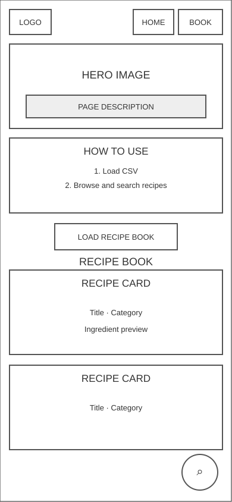
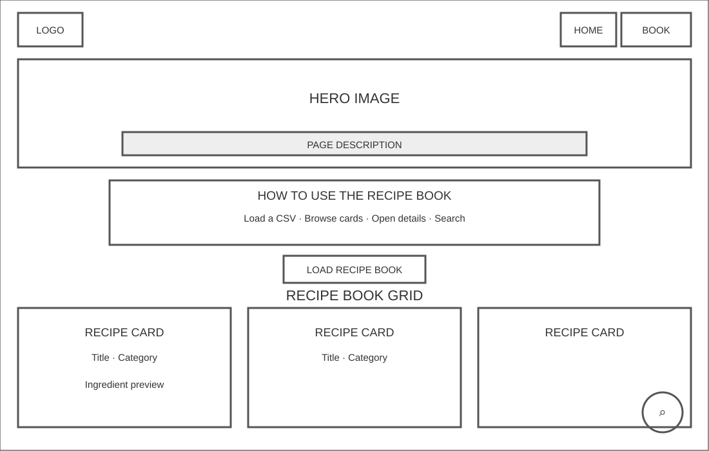

Overview
Purpose
The purpose of Paste to Plate is to help users turn messy recipe text from a website into a clean, organized recipe card. Users will be able to paste recipe text, enter basic recipe information, preview the cleaned-up recipe, upload an existing recipe CSV file, add the new recipe to that CSV data, and download an updated CSV file to save on their device.
Audience
The intended audience is people who like cooking and want an easy way to save online recipes without copying everything by hand into a document. This site is especially useful for students, families, beginner cooks, or anyone who wants a simple digital recipe book that can be saved as a CSV file and opened again later.
Dynamic elements
JavaScript will be used to make the recipe converter and recipe book interactive. The user will paste recipe text into a text area, enter a title and category, and click a button to convert the text into a recipe card. JavaScript will select form elements from the DOM, listen for button clicks and file uploads, check if required fields are filled in, create recipe objects, store the recipes in an array, read an uploaded CSV file, add new recipes to the existing CSV data, display all recipes on a second page, and create a downloadable updated CSV file. The project will use multiple functions, conditional branching, objects, arrays, and array methods such as forEach(), map(), and filter().
Branding
Website Logo
Style Guide
Color Palette
Palette URL: https://coolors.co/7a4e2d-fff3e0-3f7d20-d96c06-2f2f2f| Primary | Secondary | Accent 1 | Accent 2 |
|---|---|---|---|
| #7A4E2D | #FFF3E0 | #3F7D20 | #D96C06 |
Pseudocode
Setup
- Create two HTML pages: an index page for converting pasted recipe text and a recipe book page for uploading and viewing a recipe CSV file.
- On the index page, add a header, navigation links, an explanation, a cooking image, a validated form, a recipe preview, a message area, a button to download a new CSV, and a button that appends to a selected existing CSV.
- On the recipe-book page, add a header, navigation links back to the home page, a CSV upload input, search and filter controls, a section for recipe cards, and a message area for when no recipes are loaded.
JavaScript
-
Store the converted recipe in
currentRecipeand store uploaded recipe objects in theloadedRecipesarray on the recipe-book page. -
Each recipe object will include an
id,title,category,ingredients,instructions,originalText, anddateSaved. -
Use
document.querySelectorto select the form fields, preview, message areas, CSV input, recipe list, search controls, and action buttons.
Main Functions
-
Write a
getRecipeInputfunction that collects the title, category, and pasted recipe text from the form fields. -
Write a
validateRecipeInputfunction that checks whether the recipe text is missing. Title and category are optional and receive default values when blank. If recipe text is empty, display an error message; otherwise, allow the recipe to be converted. - Collect ingredients and instructions from separate text areas. Split each field into non-empty lines to create the ingredient and instruction lists without automatically parsing an entire webpage.
-
Write a
createRecipeObjectfunction that creates one recipe object using the title, category, ingredients, instructions, original text, unique id, and date saved. -
Write a
displayRecipePreviewfunction that updates the DOM and shows the cleaned recipe card on the page.
Recipe Book
- Add a change event listener that handles CSV file uploads.
-
Use the File
text()method to read the uploaded CSV, parse quoted rows, convert them into recipe objects, and store them inloadedRecipes. -
Write an
addRecipeToCSVDatafunction that appends the new recipe to a selected CSV file without deleting its existing recipes. -
Write a
displayRecipesfunction that usesforEach()to display the uploaded recipes as cards. -
Write a
filterRecipesfunction that usesfilter()to show only recipes that match the selected category or search term.
CSV Download
-
Write a
convertRecipesToCSVfunction that usesmap()to turn each recipe object into a CSV row. -
Write a
downloadUpdatedCSVfunction that creates the seven-column CSV with aBloband lets the user save it. - Add event listeners to the recipe form, CSV upload, download and append buttons, search input, and search-field selector.
Wireframes
Landing Page - Mobile View
The mobile landing page lets users paste recipe text, convert it into a clean card, add it directly to a selected existing CSV, or download a new CSV. On mobile, the form and preview stack vertically.

Landing Page - Desktop View
The desktop landing page uses a wider layout with the recipe form and preview side by side. The CSV download and append controls appear inside the preview card.

Recipe Book Page - Mobile View
The second page is recipe-book.html. It lets users upload a saved CSV and displays all recipes as cards. A fixed search button opens a modal that searches by name, category, ingredients, or directions.

Recipe Book Page - Desktop View
The desktop recipe book page shows uploaded recipes in a responsive grid. The search button remains fixed near the bottom-right and opens the search controls in a modal dialog.
